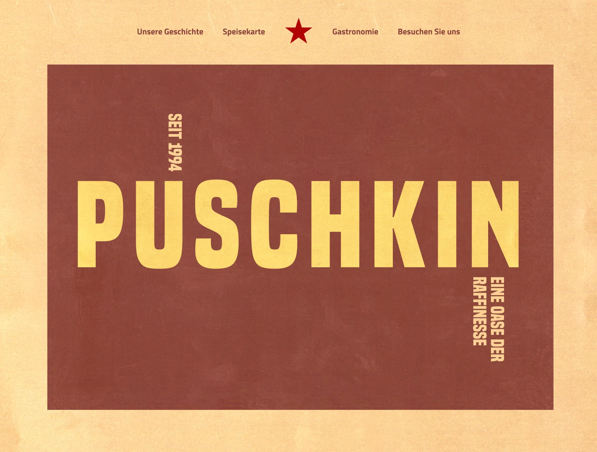
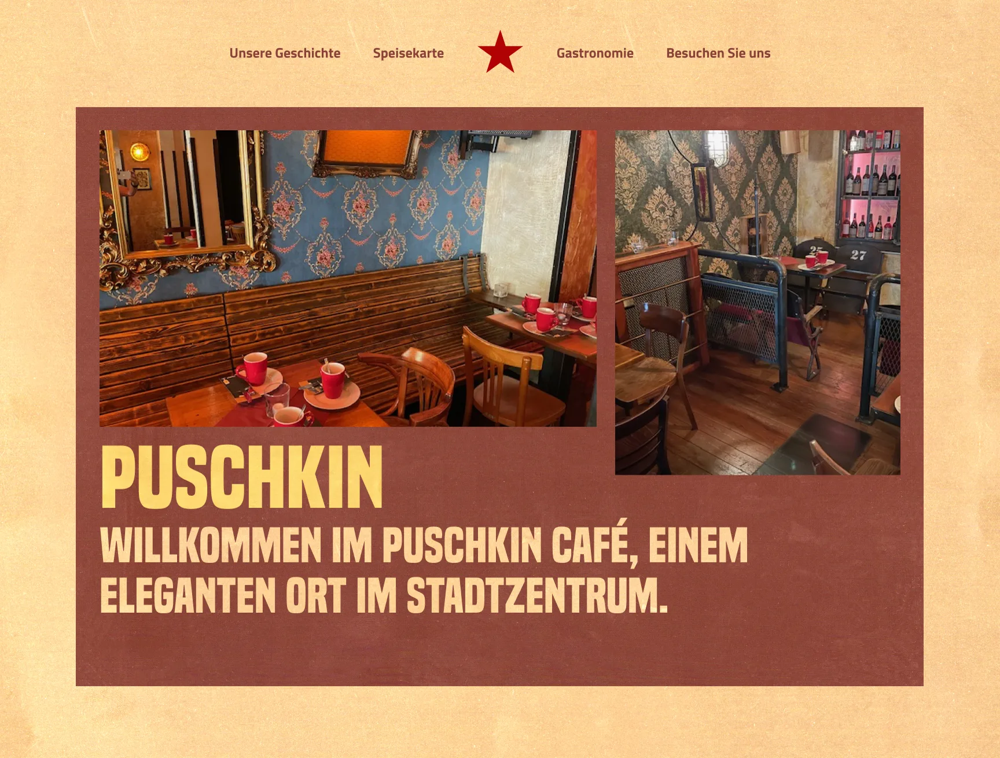
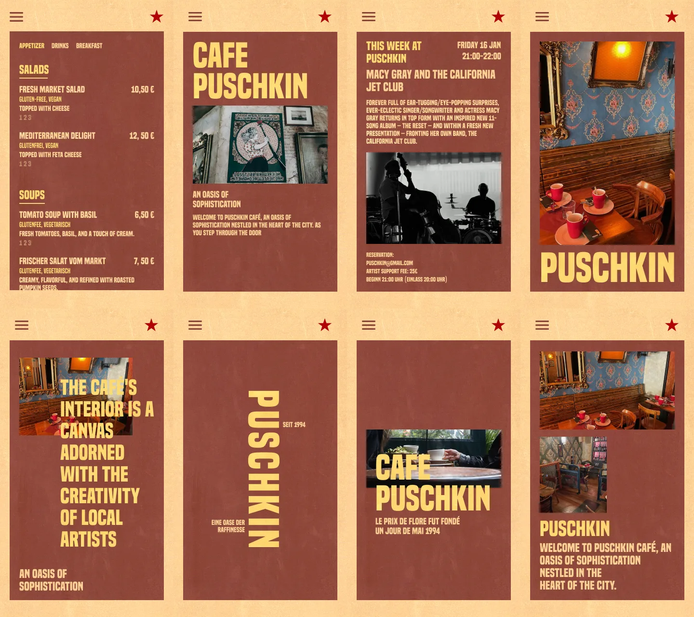
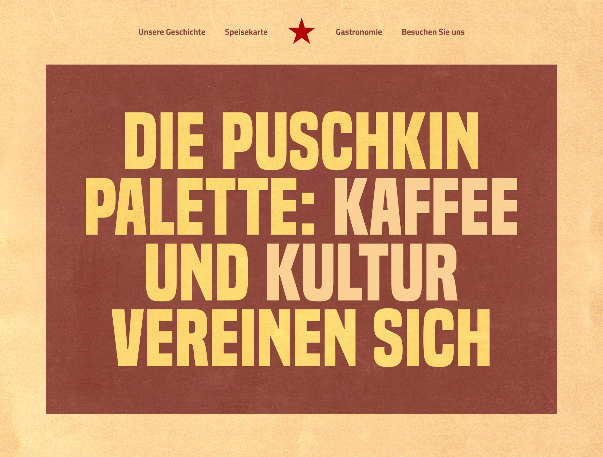
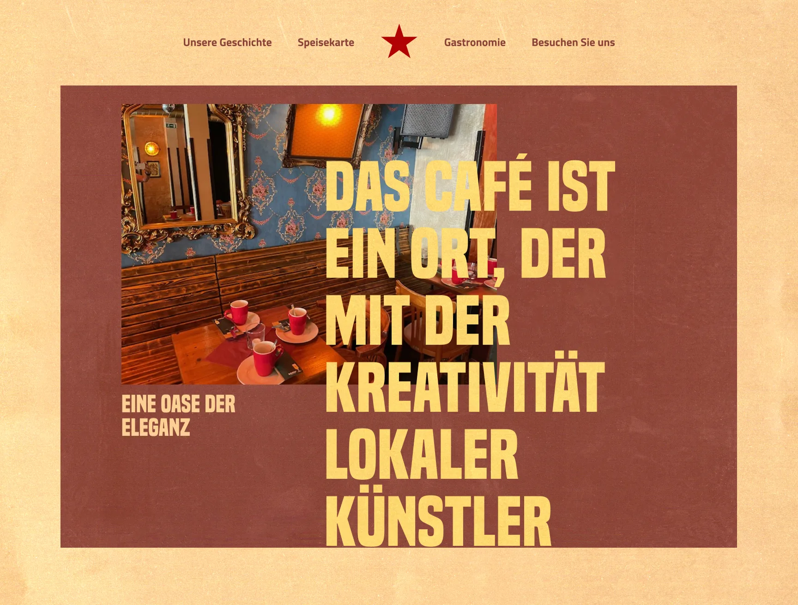

Visual identity and website for a Leipzig café and cultural venue named after the poet. Literary heritage, set in constructivist type.

A café and cultural venue in Leipzig's Südvorstadt, named after Alexander Pushkin. The identity had to connect its literary roots with the city's contemporary creative scene.

Soviet constructivist aesthetics as the starting point: bold condensed type, a red star and a warm palette of brick and cream. A strong visual language that still feels like a café.

The design honours the café's cultural roots and still does the daily job: the menu, the story and the events, on desktop and mobile.

Photography and type share the panel, so each section reads like a poster for the place.
